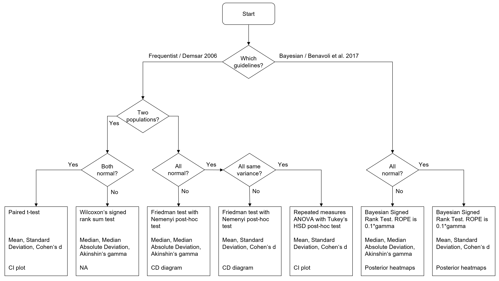

Autorank


Summary
Autorank is a simple Python package with one task: simplify the comparison between (multiple) paired populations. This is, for example, required if the performance different machine learning algorithms or simulations should be compared on multiple data sets. The performance measures on each data set are then the paired samples, the difference in the central tendency (e.g., the mean or median) can be used to rank the different algorithms. This problem is not new and how such tests could be done was already descibed in 2006 in the well-known article Janez Demšar. 2006. Statistical Comparisons of Classifiers over Multiple Data Sets. J. Mach. Learn. Res. 7 (December 2006), 1–30.
Regardless, the correct use of Demšar guidelines is hard for non-experts in statistics. Correct use of the guidelines requires the decision of whether a paired t-test, a Wilcoxon's rank sum test, repeated measures ANOVA with Tukey's HSD as post-hoc test, or Friedman's tests and Nemenyi's post-hoc test to determine an answer to the question if there are differences. For this, the distribution of the populations must be analyzed with the Shapiro-Wilk test for normality and, depending on the normality with Levene's test or Bartlett's tests for homogeneity of the data. All this is already quite complex. This does not yet account for the adjustment of the significance level in case of repeated tests to achieve the desired family-wise significance. Additionally, not only the tests should be conducted, but good reporting of the results also include confidence intervals, effect sizes, and the decision of whether it is appropriate to report the mean value and standard deviation, or whether the median value and the median absolute deviation is more appropriate.
The goal of Autorank is to simplify the statistical analysis for non-experts. Autorank takes care of all of the above with a single function call. Additional functions allow the generation of apprprioate plots, result tables, and even of a complete latex document. All that is required is the data about the populations is in a Pandas dataframe.
Installation
Autorank is available on PyPi and can be installed using pip.
pip install autorank
Documentation
You can find the documentation of the current master of Autorank online.
Description
The following flow chart summarizes the decisions made by Autorank.

Autorank uses the following strategy for the statistical comparison of paired populations: - First all populations are checked with the Shapiro-Wilk test for normality. We use Bonferoni correction for these tests, i.e., alpha/#populations. - If all columns are normal, we use Bartlett's test for homogeneity, otherwise we use Levene's test. - Based on the normality and the homogeneity, we select appropriate tests, effect sizes, and methods for determining the confidence intervals of the central tendency.
If all columns are normal, we calculate: - The mean value as central tendency. - The empirical standard deviation as measure for the variance. - The confidence interval for the mean value. - The effect size in comparison to the highest mean value using Cohen's d.
If at least one column is not normal, we calculate: - The median as central tendency. - The median absolute deviation from the median as measure for the variance. - The confidence interval for the median. - The effect size in comparison to the highest ranking approach using Cliff's delta.
For the statistical tests, there are four variants: - If there are two populations and both populations are normal, we use the paired t-test. - If there are two populations and at least one populations is not normal, we use Wilcoxon's signed rank test. - If there are more than two populations and all populations are normal and homoscedastic, we use repeated measures ANOVA with Tukey's HSD as post-hoc test. - If there are more than two populations and at least one populations is not normal or the populations are heteroscedastic, we use Friedman's test with the Nemenyi post-hoc test.
We use the paired t-test, the Wilcoxon signed rank test, and the Friedman test from scipy. The repeated measures ANOVA and Tukey's HSD test (including the calculation of the confidence intervals) are used from statsmodels. We use own implementations for the calculation of critical distance of the Nemenyi test, the calculation of the effect sizes, and the calculation of the confidence intervals (with the exception of Tukey's HSD).
Usage Example
The following example shows the usage of autorank. First, we import the functions from autorank and create some data.
import numpy as np
import pandas as pd
import matplotlib.pyplot as plt
from autorank import autorank, plot_stats, create_report, latex_table
np.random.seed(42)
pd.set_option('display.max_columns', 7)
std = 0.3
means = [0.2, 0.3, 0.5, 0.8, 0.85, 0.9]
sample_size = 50
data = pd.DataFrame()
for i, mean in enumerate(means):
data['pop_%i' % i] = np.random.normal(mean, std, sample_size).clip(0, 1)
The statitistical analysis of the data only requires a single command. As a result, you get a named tuple with all relevant information from the statistical analysis conducted.
result = autorank(data, alpha=0.05, verbose=False)
print(result)
Output:
RankResult(rankdf=
meanrank median mad ci_lower ci_upper effect_size mangitude
pop_5 2.18 0.912005 0.130461 0.692127 1 2.66454e-17 negligible
pop_4 2.29 0.910437 0.132786 0.654001 1 -0.024 negligible
pop_3 2.47 0.858091 0.210394 0.573879 1 0.1364 negligible
pop_2 3.95 0.505057 0.333594 0.227184 0.72558 0.6424 large
pop_1 4.71 0.313824 0.247339 0.149473 0.546571 0.8516 large
pop_0 5.40 0.129756 0.192377 0 0.349014 0.9192 large
pvalue=2.3412212612346733e-28,
cd=1.0662484349869374,
omnibus='friedman',
posthoc='nemenyi',
all_normal=False,
pvals_shapiro=[1.646607051952742e-05, 0.0605173334479332, 0.13884511590003967, 0.00010030837438534945,
2.066387423838023e-06, 1.5319776593969436e-06],
homoscedastic=True,
pval_homogeneity=0.2663177301695518,
homogeneity_test='levene')
alpha=0.05,
alpha_normality=0.008333333333333333,
num_samples=50)
You can go ahead and use this tuple to create your own report about the statistical analysis. Alternatively, you can use autorank for this task.
create_report(result)
Output:
The statistical analysis was conducted for 6 populations with 50 paired samples.
The family-wise significance level of the tests is alpha=0.050.
We rejected the null hypothesis that the population is normal for the populations pop_5 (p=0.000), pop_2 (p=0.000),
pop_1 (p=0.000), and pop_0 (p=0.000). Therefore, we assume that not all populations are normal.
Because we have more than two populations and the populations and some of them are not normal, we use the
non-parametric Friedman test as omnibus test to determine if there are any significant differences between the
median values of the populations. We use the post-hoc Nemenyi test to infer which differences are significant. We report
the median (MD), the median absolute deviation (MAD) and the mean rank (MR) among all populations over the samples.
Differences between populations are significant, if the difference of the mean rank is greater than the critical
distance CD=1.066 of the Nemenyi test.
We reject the null hypothesis (p=0.000) of the Friedman test that there is no difference in the central tendency of
the populations pop_5 (MD=0.912+-0.154, MAD=0.130, MR=2.180), pop_4 (MD=0.910+-0.173, MAD=0.133, MR=2.290), pop_3
(MD=0.858+-0.213, MAD=0.210, MR=2.470), pop_2 (MD=0.505+-0.249, MAD=0.334, MR=3.950), pop_1 (MD=0.314+-0.199,
MAD=0.247, MR=4.710), and pop_0 (MD=0.130+-0.175, MAD=0.192, MR=5.400). Therefore, we assume that there is a
statistically significant difference between the median values of the populations.
Based the post-hoc Nemenyi test, we assume that there are no significant differences within the following groups:
pop_5, pop_4, and pop_3; pop_2 and pop_1; pop_1 and pop_0. All other differences are significant.
Our you could use Autorank to generate a plot that visualizes the statistical analysis. Autorank creates plots of the confidence interval in case of the paired t-test and repeated measures ANOVA and a critical distance diagram for the post-hoc Nemenyi test.
plot_stats(result)
plt.show()
For the above example, the following plot is created:

To further support reporting in scholarly article, Autorank can also generate a latex table with the relevant results.
latex_table(result)
Output:
\begin{table}[h]
\centering
\begin{tabular}{lrlllll}
\toprule
{} & MR & MED & MAD & CI & $\delta$ & Magnitude \\
\midrule
pop\_5 & 2.180 & 0.912 & 0.130 & [0.692, 1.000] & 0.000 & negligible \\
pop\_4 & 2.290 & 0.910 & 0.133 & [0.654, 1.000] & -0.024 & negligible \\
pop\_3 & 2.470 & 0.858 & 0.210 & [0.574, 1.000] & 0.136 & negligible \\
pop\_2 & 3.950 & 0.505 & 0.334 & [0.227, 0.726] & 0.642 & large \\
pop\_1 & 4.710 & 0.314 & 0.247 & [0.149, 0.547] & 0.852 & large \\
pop\_0 & 5.400 & 0.130 & 0.192 & [0.000, 0.349] & 0.919 & large \\
\bottomrule
\end{tabular}
\caption{Summary of populations}
\label{tbl:stat_results}
\end{table}
The rendered table looks like this (may change depending on the class of the document).

Contributing
Contributions to Autorank are welcome. - Just file an Issue to ask questions, report bugs, or request new features. - Pull requests via GitHub are also welcome.
Potential contributions include more detailed report generation or the extension of Autorank to more types of data, e.g., independent populations, or paired populations with unequal sample sizes.
License
Autorank is published under the Apache 2.0 Licence.